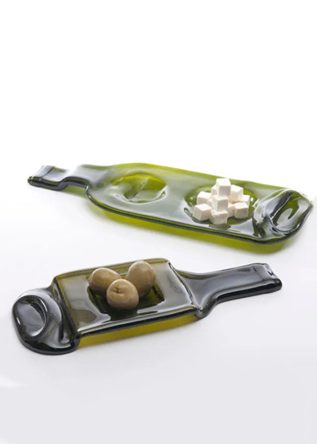
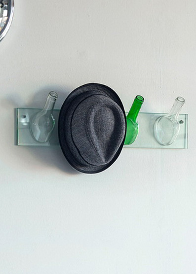
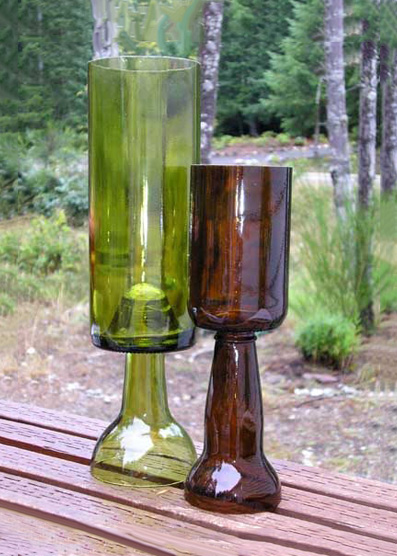
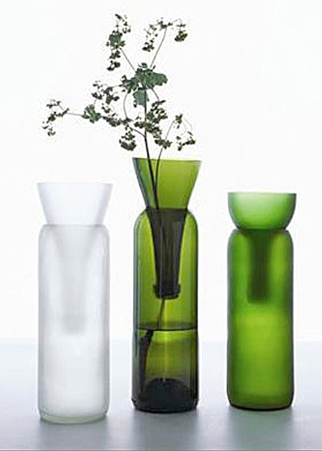
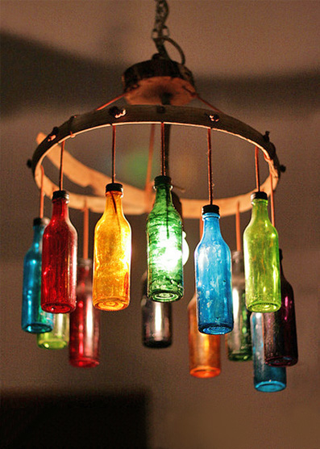
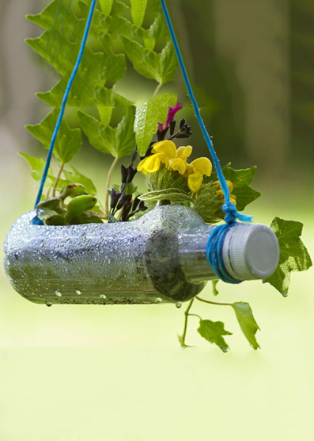
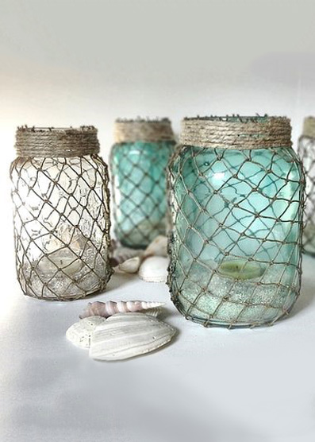
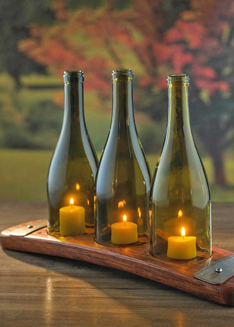

Esta técnica es relativamente sencilla: se trata de a partir de un diseño previo, tomar un vidrio como base
e ir superponiéndole, conforme a ese diseño, otros tipos de vidrios para posteriormente introducir el
conjunto en un horno a alta temperatura y fundirlo, siendo el artesano el que con su destreza consigue aunar
en armonía, técnica y creatividad, para lograr piezas únicas e irrepetibles.
La gran variedad de vidrios disponibles en la actualidad, potencian y estimulan la creatividad de los
artesanos dando como resultado verdaderas obras de arte: desde el más simple cenicero hasta la vidriera más
compleja, pasando por lavabos, encimeras o centros de mesa.

Paisaje abstracto realizado en una botella, de EcoIdea

Moderno y novedoso, ceniceros realizados en vidrio color verde

Colgadores de ropa realizados en botellas de vidrio

Copas originales de botellas de vidrio en diversos colores

Florero hecho en cortes de vidrio, botellas de diversos colores

Lámpara colgante en diversos colores de botellas

Macetero para plantas, realizado con cortes laterales

Frascos utilizados para pesceras, enmallados, de EcoIdeas

Botellas a modo de lámpara, para una cena inolvidable